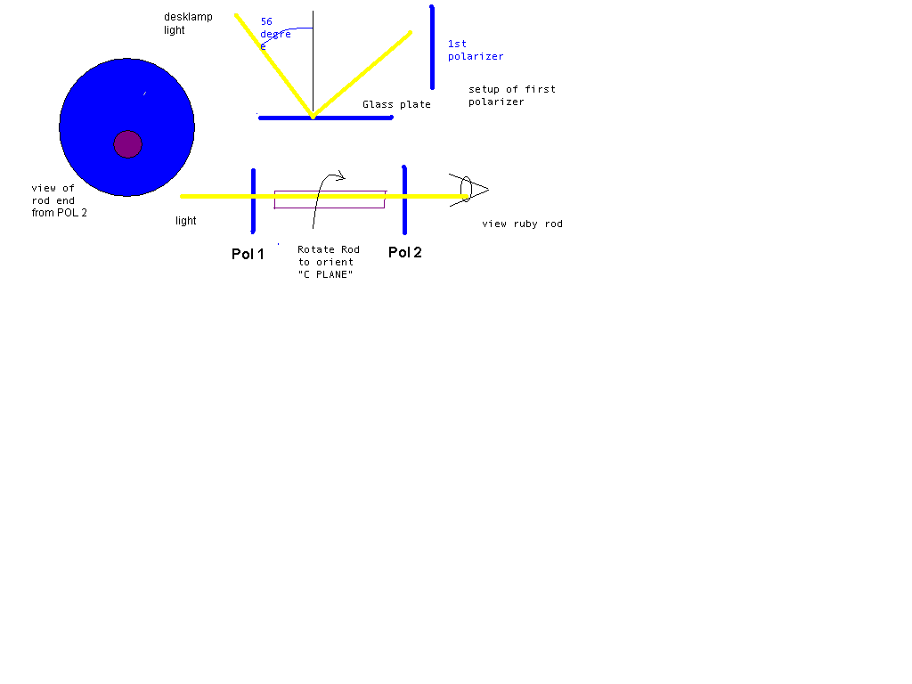

Home Return to Main Page
Alignment of Ruby Rod
This is a critical step if you are designing a MOPA arrangement or using porro prisms as a HR mirror or if you plan on using a pockel Q switch or other resonator configuration that depends on proper orientation of the rod. As a recommendation you should always orient the rod so you know it's output polarization.
Below this diagram is the text procedure.

Step 1.
Find the orientation of first polarizer
Lay a piece of glass window plate down flat on the desk. Then direct a desklamp at 56 to 57 degree angle from perpendicular of the plate (Brewster angle). This will cause a beam to be reflected that is horizontally polarized. Place a camera lens type polarizer filter in the reflected beam and rotate the polarizer until maximum darkness is achieved. This should now orient your polarizer vertically. Secure this polarizer from moving. Move the lamp so that the direct beam instead of the reflected beam now goes through polarizer 1.
Step 2.
Create a cross polarizer
Now place a second polarizer in front of the first one and rotate it until maximum darkness is achieved. Secure polarizer 2.
Step 3.
Orient Ruby rod.
Place rod between crossed polarizers with rod ends pointing at each polarizer and where you can view through the rod looking through the polarizers and down the rod longitudinal axis. To obtain proper orientation with the first polarizer, temporarily remove the second polarizer and look through the rod with the first polarizer still behind it. Rotate the rod about the longitudinal axis until maximum red color is observed (a purple/red hue vs an orange/red hue). This is approximately the orientation of placing the "C plane" horizontal.. Place the second polarizer back in front. Rotate the rod plus or minus the current longitudinal position to fine tune the apparent darkness until maximum darkness is achieved. Be careful not to rotate more that 45 degrees either way or you may have to confirm again that you are aligned with the first polarizer. When maximum darkness is achieved with cross polarizers and first polarizer then the ruby "C plane" is now aligned horizontally.
Step 4.
Confirm Rod orientation.
No matter which end of the rod you view from, the rod should remain dark when viewed between the cross polarizers. Mount the rod so that the longitudinal rotation is fix. Now flip the rod around so that the other rod end is now facing you between the cross polarizers. If your rod still has maximum darkness then all is okay. If not, (first polarizer was not aligned perfectly vertical) then rotate the mount and rod like before to find out how many degrees you are off by then re-adjust the first polarizer by ½ of that amount and re-adjust your second polarizer until maximum darkness is achieved. Then re-align your rod and confirm by flipping it around. When the rod is at maximum darkness when viewed from either rod end then you have aligned the rod's "C plane" within 1 or 2 degrees of horizontal and your laser output will be vertically polarized. All rods of your MOPA should be aligned together to insure they are all within the same tolerance as this will achieve maximum power amplification. As a note a unpumped rod oriented this way will create the maximum absorption of the laser radiation as well. Example: a 76 mm rod reduces a 13mj pulse down to 5mj when unpumped. Pumped it raises the output to 35mj. The rod is then rotated 90 degrees and the unpumped rod reduces output to 10mj and pumped will only output to 18mj.
This procedure works for also for sapphire etalons except that you will only be able to orient the etalon to one of the cross polarizers and therefore either you are oriented correctly or you are out by 90 degrees. To determine the correct orientation for the etalon then use a vertically polarized diode lase or HENE laser or pass it through the first polarizer and measure the laser output with a power meter. Then reflect the vertical polarized laser beam off the etalon near normal 0 degree incident and measure the power that is reflected. If you have it oriented correctly you will achieve maximum reflectivity with regard to the two positions.